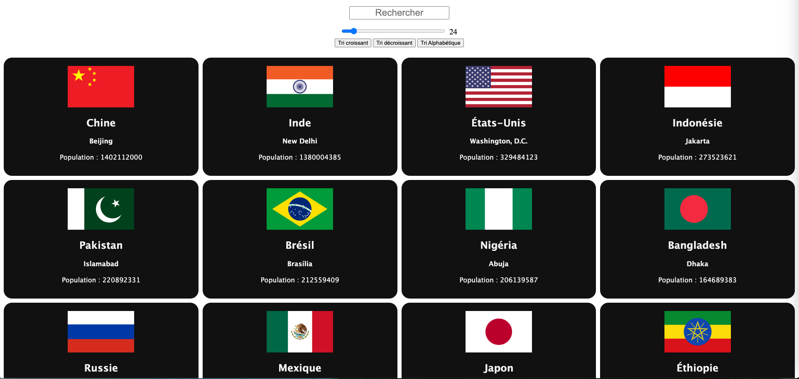

Le point de départ
Afficher et filtrer efficacement plus de 250 pays avec une recherche fluide, tout en maintenant une bonne lisibilité sur mobile sans surcharger l'interface.

Country App est une application éducative permettant d'explorer les pays du monde de manière intuitive. Elle consomme l'API REST Countries pour afficher en temps réel les drapeaux, capitales, populations, langues, monnaies et codes téléphoniques de chaque pays.
Le projet propose une recherche instantanée, un filtrage par continent et une fiche détaillée par pays avec les pays frontaliers liés. Le design responsive garantit une expérience optimale sur mobile et desktop.
Affichage de 250+ drapeaux avec informations clés en un coup d'œil.
Filtrage en temps réel par nom de pays sans rechargement de page.
Navigation par région géographique (Afrique, Asie, Europe…).
Page dédiée avec capitale, monnaie, langues, et pays frontaliers cliquables.
Afficher et filtrer efficacement plus de 250 pays avec une recherche fluide, tout en maintenant une bonne lisibilité sur mobile sans surcharger l'interface.
Mise en cache des données API au premier chargement, filtrage JS pur côté client pour la réactivité maximale, et grille CSS adaptative qui se reconfigure automatiquement selon la taille d'écran.
Démo live disponible.
Consultation gratuite de 30 minutes pour cadrer votre projet. Réponse sous 24 h ouvrées.
Démarrer un projet